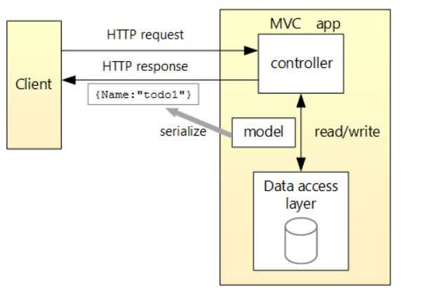

myCority is a Web AI project developed using Microsoft’s .Net Core library and the MVC (Model-View-Controller) architecture pattern. The client (or front-end application) that consumes the Web API was developed using the Angular 2+ framework. The client and Web API will exchange data in JSON format using the ‘POST’ and ‘GET’ HTTP requests. The diagram below illustrates this exchange:

The client application has an internet/intranet web browser interface. It is device-independent and works on up-to-date versions of Mozilla Firefox, Internet Explorer, Google Chrome, and Apple Safari.
The application runs on standard Windows servers (physical or virtual), using Internet Information Server (IIS). The IIS must have the .NET framework and .NET Core Windows Server Hosting bundles installed.
The middle tier of the application (the business tier), uses objects based on Microsoft .Net Core framework. These objects encapsulate the application logic and provide a simple interface to the upper tier. The Application Server must be a Microsoft Windows Server with Microsoft .Net framework.
myCority uses the same database as the Cority application, which runs on Microsoft SQL Server.
See the Cority System Guide for more information on database architecture.
myCority uses Entity Framework. This is an Object Relational Mapping (ORM) framework that will communicate to the database. Alternatively, a direct querying mechanism called ‘Dapper’ can be used for some queries to optimize their performance.